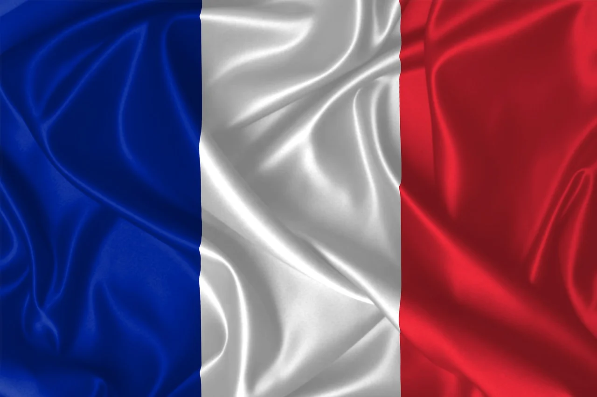

Lugares Turísticos
París
París es la ciudad del amor, famosa por la Torre Eiffel, el Louvre y sus encantadoras calles. Un lugar icónico que debes visitar.
Marsella
Ciudad portuaria del sur de Francia con mucha historia, playas, y el famoso puerto viejo. Ideal para disfrutar del mar y la cultura.
Lyon
Conocida por su gastronomía y arquitectura renacentista. Es Patrimonio de la Humanidad y un gran destino turístico.
COMIDA TIPICA
Boeuf Bourguignon
Estofado de carne de res cocido en vino tinto con verduritas. Súper típico de la región de Borgoña.

HIMNO A Francia
"La Marseillaise" fue compuesta en 1792. Es un símbolo de lucha y libertad durante la Revolución Francesa.